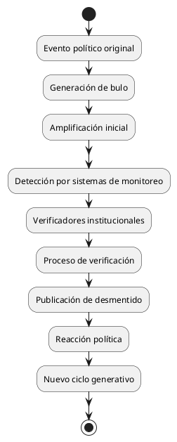

La Política del Bulo y Antibulo: Un Análisis Crítico del Ecosistema de Desinformación Contemporáneo
La Política del Bulo y Antibulo: Un Análisis Crítico del Ecosistema de Desinformación Contemporáneo
La política del bulo y antibulo constituye un fenómeno estructural en el panorama político contemporáneo, caracterizado por la creación deliberada de narrativas falsas y la subsecuente movilización de recursos para combatirlas. Este ecosistema de desinformación y verificación ha transformado fundamentalmente la dinámica del debate público, generando nuevos actores, mercados y relaciones de poder que trascienden los marcos tradicionales de la comunicación política.
Introducción
Definición Conceptual
El Bulo Político
Información deliberadamente falsa o distorsionada, diseñada específicamente para influir en procesos políticos, desacreditar oponentes o manipular la opinión pública mediante la explotación de sesgos cognitivos y emocionales.
El Antibulo
Sistema organizado de verificación, desmentido y corrección de información falsa que incluye tanto iniciativas institucionales como ciudadanas, desarrollado como respuesta reactiva al fenómeno del bulo político.
Marco Histórico Contemporáneo
El fenómeno se ha intensificado exponencialmente con la democratización de las plataformas digitales, particularmente desde 2010, alcanzando su máxima expresión durante procesos electorales de alta polarización y crisis sociopolíticas. La pandemia de COVID-19 y los procesos electorales de 2020-2024 han servido como catalizadores para la institucionalización de ambos fenómenos.
Objetivos Estratégicos del Ecosistema
Objetivos del Bulo Político
Desestabilización Institucional
La generación sistemática de dudas sobre la legitimidad de instituciones democráticas mediante la propagación de narrativas que cuestionan su funcionamiento, transparencia y representatividad.
Fragmentación Social
La creación de divisiones artificiales en el tejido social mediante la explotación de tensiones preexistentes, amplificando conflictos latentes para generar polarización política aprovechable electoralmente.
Control Narrativo
El establecimiento de marcos interpretativos alternativos que permitan recontextualizar eventos políticos según conveniencias partidistas, independientemente de su veracidad factual.
Objetivos del Sistema Antibulo
Preservación de la Verdad Factual
La defensa de estándares de veracidad en el debate público mediante la verificación sistemática de afirmaciones políticas y la corrección de información errónea.
Restauración de la Confianza Institucional
El fortalecimiento de la credibilidad de instituciones democráticas y medios de comunicación tradicionales frente a narrativas desestabilizadoras.
Educación Ciudadana
El desarrollo de capacidades críticas en la población para identificar y evaluar información política, promoviendo una participación democrática más informada.
Arquitectura del Ecosistema de Bulos
Actores Principales
Generadores Primarios
Organizaciones especializadas en la producción de contenido desinformativo, incluyendo granjas de trolls, agencias de desinformación profesional y redes de influencia coordinada.
Amplificadores
Usuarios automatizados y humanos que distribuyen contenido falso a través de redes sociales, utilizando técnicas de amplificación artificial para simular apoyo orgánico.
Legitimadores
Figuras públicas, medios alternativos y líderes de opinión que proporcionan credibilidad a narrativas falsas mediante su endorsement o repetición.
Mecanismos de Producción
| Tipo de Bulo | Metodología | Objetivo Específico | Efectividad |
|---|---|---|---|
| Fabricación Total | Creación de eventos inexistentes | Generar indignación | Alta impacto inicial |
| Distorsión Contextual | Manipulación de hechos reales | Cambiar interpretación | Muy alta persistencia |
| Omisión Selectiva | Presentación parcial de información | Sesgos confirmativos | Media sostenida |
| Atribución Falsa | Citas inventadas o manipuladas | Autoridad percibida | Alta credibilidad |
| Temporalidad Alterada | Eventos reales en contextos incorrectos | Confusión temporal | Media confusión |
Arquitectura del Sistema Antibulo
Verificadores Institucionales
Organizaciones Profesionales
Entidades especializadas en fact-checking que operan bajo estándares periodísticos profesionales, incluyendo organizaciones como Snopes, PolitiFact, FactCheck.org y sus equivalentes internacionales.
Plataformas Tecnológicas
Sistemas automatizados y semi-automatizados desarrollados por compañías de redes sociales para identificar, etiquetar y reducir la distribución de contenido potencialmente falso.
Iniciativas Académicas
Proyectos de investigación universitarios enfocados en el estudio y combate de la desinformación, incluyendo desarrollo de herramientas de detección y análisis de patrones.
Metodologías de Verificación
Verificación de Fuentes
Proceso sistemático de validación de la procedencia y credibilidad de información, incluyendo análisis de metadatos, verificación de testimonios y confirmación de eventos.
Análisis Técnico
Utilización de herramientas especializadas para detectar manipulación digital en imágenes, videos y audio, incluyendo técnicas de detección de deepfakes y alteraciones.
Triangulación de Datos
Contrastación de información con múltiples fuentes independientes para establecer coherencia factual y identificar inconsistencias significativas.
Análisis de Efectividad Comparativa
Eficacia del Bulo
Velocidad de Propagación
Los bulos se propagan significativamente más rápido que las correcciones, aprovechando algoritmos de engagement que priorizan contenido emocionalmente activador sobre información verificada.
Persistencia Cognitiva
La información falsa muestra mayor resistencia al desmentido debido a sesgos psicológicos como el efecto de ilusión de verdad y la preferencia por información que confirma creencias preexistentes.
Costo-Beneficio
La producción de bulos requiere inversión mínima en comparación con la verificación profesional, creando una asimetría económica favorable a la desinformación.
Eficacia del Antibulo
Limitaciones Estructurales
Los sistemas de verificación enfrentan restricciones de tiempo, recursos y alcance que limitan su capacidad de respuesta frente al volumen de desinformación producida.
Efectos Contraproducentes
La corrección de información falsa puede paradójicamente reforzar su memorabilidad mediante el efecto de familiaridad, especialmente en audiencias predispuestas a creer la información original.
Fragmentación de Audiencias
Los esfuerzos de verificación frecuentemente alcanzan principalmente a audiencias ya convencidas de su importancia, fallando en penetrar comunidades donde los bulos tienen mayor arraigo.
Impacto en el Sistema Político
Transformación del Debate Público
Desplazamiento de Prioridades
El debate político se centra crecientemente en la veracidad de afirmaciones específicas en lugar de evaluación de políticas públicas, desplazando la discusión sustantiva hacia procedimientos de verificación.
Erosión de Consensos Factuales
La politización de la verificación de hechos ha erosionado consensos básicos sobre la realidad factual, complicando la formación de políticas públicas basadas en evidencia.
Profesionalización de la Desinformación
El desarrollo de capacidades profesionales tanto en generación como en combate de bulos ha creado un nuevo sector de la industria política con sus propias dinámicas económicas.
Efectos en la Participación Democrática
| Indicador Democrático | Impacto del Bulo | Impacto del Antibulo | Resultado Neto |
|---|---|---|---|
| Confianza Electoral | Fuerte Negativo | Moderado Positivo | Negativo |
| Participación Informada | Fuerte Negativo | Débil Positivo | Negativo |
| Cohesión Social | Fuerte Negativo | Neutro | Negativo |
| Calidad Deliberativa | Fuerte Negativo | Moderado Positivo | Negativo |
| Legitimidad Institucional | Moderado Negativo | Moderado Positivo | Neutro |
Análisis de Ganadores y Perdedores
Beneficiarios del Ecosistema
Actores Políticos Disruptivos
Candidatos y movimientos que se benefician de la desestabilización del status quo encuentran en el ecosistema de bulos una herramienta efectiva para cuestionar establecimientos políticos sin proponer alternativas constructivas.
Industria de Verificación
El crecimiento del sector antibulo ha generado oportunidades económicas para organizaciones especializadas, académicos y tecnólogos enfocados en combatir la desinformación.
Plataformas Digitales
Las controversias generadas por bulos y su verificación incrementan el engagement y tiempo de permanencia en plataformas, beneficiando modelos de negocio basados en atención.
Medios Sensacionalistas
Organizaciones mediáticas que priorizan el impacto sobre la precisión se benefician del ciclo continuo de escándalo y desmentido que caracteriza este ecosistema.
Perjudicados Estructurales
Ciudadanía en General
La población enfrenta creciente dificultad para navegar el panorama informativo, experimentando fatiga cognitiva y desconfianza generalizada hacia fuentes de información.
Instituciones Democráticas Tradicionales
Parlamentos, sistemas judiciales y burocracias estatales ven erosionada su autoridad epistémica frente a narrativas alternativas que cuestionan su legitimidad.
Periodismo Profesional
Los medios tradicionales enfrentan desafíos crecientes para mantener audiencias y credibilidad en un ambiente donde la verificación profesional compite con información más atractiva pero menos precisa.
Expertos y Académicos
La autoridad técnica y científica se ve cuestionada por narrativas populistas que presentan la experiencia profesional como elitismo desconectado de la experiencia ciudadana.
Casos Representativos de Análisis
Bulo Electoral: Fraude en Sistemas de Votación
La narrativa de sistemas de votación comprometidos ilustra cómo bulos específicos pueden escalar hasta cuestionar la legitimidad fundamental de procesos democráticos, generando movilización política significativa basada en premisas falsas.
Antibulo Sanitario: Verificación de Información sobre Vacunas
Los esfuerzos de verificación durante la pandemia demuestran tanto el potencial como las limitaciones de sistemas antibulo profesionales frente a desinformación médica con implicaciones políticas.
Ciclo Completo: Migración y Criminalidad
La interacción entre bulos sobre migración, verificación de estadísticas y recontextualización política ilustra la complejidad del ecosistema completo y sus efectos en políticas públicas.
Estrategias de Intervención y Regulación
Enfoques Regulatorios
Regulación de Plataformas
Implementación de marcos legales que requieran transparencia en algoritmos de distribución y responsabilidad por contenido amplificado artificialmente, balanceando libertad de expresión con protección contra manipulación.
Estándares Profesionales
Desarrollo de códigos de conducta para verificadores de hechos que aseguren independencia, transparencia metodológica y eviten sesgos políticos partidistas.
Educación Mediática Obligatoria
Integración curricular de competencias de análisis crítico de medios desde niveles educativos básicos, enfocándose en identificación de fuentes, evaluación de evidencia y reconocimiento de sesgos.
Innovaciones Tecnológicas
Sistemas de Trazabilidad
Desarrollo de tecnologías blockchain para crear registros inmutables de procedencia de información, permitiendo rastrear el origen y modificaciones de contenido digital.
Detección Automatizada Mejorada
Avances en inteligencia artificial para identificación temprana de patrones de desinformación, incluyendo análisis semántico y detección de coordinated inauthentic behavior.
Interfaces de Verificación Ciudadana
Plataformas que permitan verificación colaborativa manteniendo estándares de calidad, democratizando el proceso de fact-checking sin comprometer rigor metodológico.
Diagrama de Flujo: Ciclo del Bulo-Antibulo

- Descripción del Diagrama:
El diagrama representa el ciclo típico de un bulo político: parte de un evento original, pasa por la generación y amplificación del bulo, su detección por sistemas de monitoreo y verificadores, el proceso de verificación y publicación del desmentido, seguido de la reacción política y la generación de nuevos ciclos.
Proyecciones y Escenarios Futuros
Escenario de Intensificación
Características Principales
Escalamiento de la sofisticación técnica tanto en generación como detección de desinformación, incluyendo uso generalizado de inteligencia artificial para crear contenido falso cada vez más convincente.
Implicaciones Políticas
Erosión acelerada de consensos factuales básicos, llevando a la fragmentación de la sociedad en comunidades epistémicas incompatibles con marcos de referencia mutuamente excluyentes.
Riesgos Sistémicos
Colapso potencial de instituciones democráticas basadas en deliberación racional, siendo reemplazadas por sistemas de dominación basados en control narrativo y manipulación emocional.
Escenario de Equilibrio Regulado
Características Principales
Desarrollo de marcos regulatorios efectivos que balanceen libertad de expresión con protección contra manipulación sistemática, acompañados de mejoras significativas en educación mediática.
Implicaciones Políticas
Estabilización del ecosistema informativo con coexistencia controlada entre generadores de contenido y verificadores, manteniendo debate político dentro de parámetros factuales compartidos.
Beneficios Potenciales
Preservación de instituciones democráticas tradicionales con adaptaciones que incorporen lecciones aprendidas sobre vulnerabilidades informativas en la era digital.
Escenario de Transformación Radical
Características Principales
Emergence de nuevos modelos de organización social que trascienden las categorías tradicionales de verdadero/falso, desarrollando sistemas de toma de decisiones colectivas basados en principios diferentes a la verificación factual.
Implicaciones Políticas
Reorganización fundamental de las estructuras de poder político alrededor de nuevas formas de legitimidad que no dependen de autoridad epistémica tradicional.
Incertidumbres Críticas
Las consecuencias de tal transformación para valores democráticos fundamentales como igualdad, participación y rendición de cuentas permanecen impredecibles.
Conclusiones Analíticas
Hallazgos Fundamentales
La política del bulo y antibulo representa una transformación estructural del ecosistema informativo que ha reconfigurado permanentemente las dinámicas del poder político contemporáneo. Este fenómeno trasciende las categorías tradicionales de propaganda política al crear un meta-conflicto sobre los criterios mismos de veracidad y autoridad epistémica.
El análisis revela que ningún actor individual controla completamente este ecosistema, pero ciertos tipos de actores políticos se benefician desproporcionadamente de la incertidumbre y fragmentación que genera. La asimetría fundamental entre la facilidad de crear desinformación y la dificultad de corregirla crea ventajas sistemáticas para actores dispuestos a abandonar compromisos con la veracidad.
Implicaciones para la Gobernanza Democrática
Desafíos Estructurales
Las democracias contemporáneas enfrentan el desafío fundamental de mantener deliberación racional en un ambiente donde los incentivos económicos y políticos favorecen la generación de contenido emocionalmente activador sobre información verificada.
Adaptaciones Institucionales Necesarias
Las instituciones democráticas requieren adaptaciones significativas para funcionar efectivamente en este nuevo ambiente informativo, incluyendo nuevos mecanismos de accountability, transparencia y educación ciudadana.
Tensiones Irresolubles
Persisten tensiones fundamentales entre valores democráticos como libertad de expresión, autonomía individual y autogobierno colectivo que no admiten soluciones técnicas simples.
Recomendaciones Estratégicas
Para Actores Institucionales
Desarrollo de capacidades de respuesta rápida a desinformación que mantengan legitimidad democrática sin recurrir a censura autoritaria, incluyendo inversión en educación mediática y transparencia de procesos.
Para Organizaciones de Verificación
Adopción de estándares metodológicos que prioricen la construcción de consensos factuales amplios sobre la corrección partidista, incluyendo mecanismos de verificación de verificadores para mantener credibilidad.
Para Plataformas Tecnológicas
Implementación de sistemas de moderación que balanceen eficacia en reducir desinformación con preservación de diversidad de perspectivas legítimas, incluyendo mayor transparencia en algoritmos de distribución.
Para la Sociedad Civil
Fortalecimiento de organizaciones intermedias que puedan servir como puentes entre comunidades epistémicas fragmentadas, promoviendo diálogo constructivo basado en metodologías compartidas de evaluación de evidencia.
Referencias Documentales
Literatura Académica Especializada
- Bennett, W. Lance y Steven Livingston. "The Disinformation Order: Disruptive Communication and the Decline of Democratic Institutions." European Journal of Communication, 2018.
- Lewandowsky, Stephan, et al. "Beyond Misinformation: Understanding and Coping with the 'Post-Truth' Era." Journal of Applied Research in Memory and Cognition, 2017.
- Rosen, Jay. "What I Think I Know About Journalism." New York University Press, 2021.
- Tufekci, Zeynep. "Twitter and Tear Gas: The Power and Fragility of Networked Protest." Yale University Press, 2017.
Estudios Empíricos y Reportes Técnicos
- First Draft News. "Information Disorder: Toward an Interdisciplinary Framework for Research and Policy Making." Council of Europe, 2017.
- Knight Foundation. "Indicators of News Media Trust." Miami: John S. and James L. Knight Foundation, 2019.
- Oxford Internet Institute. "Global Inventory of Organised Social Media Manipulation." Oxford: Oxford Internet Institute, 2021.
- Reuters Institute. "Journalism, Media, and Technology Trends and Predictions 2025." Oxford: Reuters Institute, 2025.
Documentación Institucional
- European Commission. "Code of Practice on Disinformation." Brussels: European Commission, 2022.
- Facebook Oversight Board. "Policy Advisory Opinion on Climate Change Misinformation." Meta Platforms, 2024.
- International Fact-Checking Network. "Code of Principles." Poynter Institute, 2023.
- UNESCO. "Journalism, 'Fake News' and Disinformation: Handbook for Journalism Education and Training." Paris: UNESCO, 2018.
Casos de Estudio Documentados
- Brennan Center for Justice. "Election Disinformation: A Comprehensive Review of 2020-2024." New York University